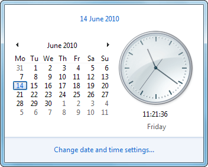
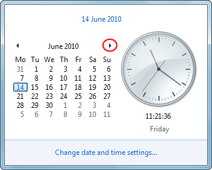
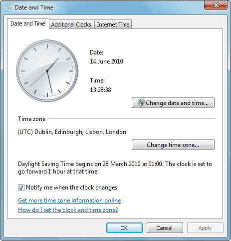
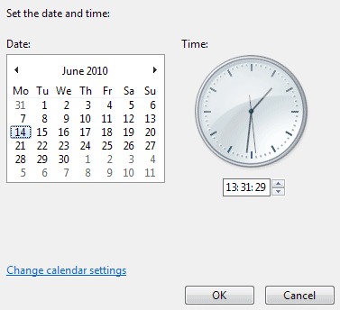
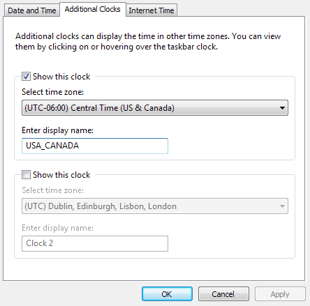
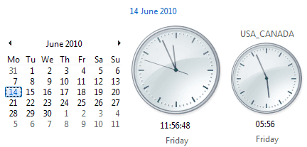

Free
computer Tutorials
|
Free
computer Tutorials
|
|
 back back |
Stay at Home and Learn | ||||
The Date and Time in Windows 7
The default clock shows you the date as well as the time: You can change how Windows 7 displays these. You can even add clocks for other time zones.
Click on the clock to see a new popup window:  As you can see, as well as a clock you get a calendar. Click the arrows to display new months:  To change the settings for the clock, the date, and the time, click on "Change date and time settings". You should see the following dialogue box appear:  If your clock is showing the wrong time, or the wrong date, click the button "Change date and time ..." When you do, you'll see the following dialogue box appear:  To change the date, click the black left and right arrows to move to the correct month. Then select the date you want. To change the time, click the up and down arrows below the clock. Click OK when the date and time are correct.
If you want to play around with the way Windows 7 displays the Date and Time, click on "Change calendar settings" then play around with the settings. You may need to restart before the changes take effect. If you want more than one time zone to appear, click the" Additional Clocks" tab at the top of the Date and Time dialogue box:  Click the box to the left of "Show this clock" and the drop down list will become available. Select a time zone from the list. Type a name for you clock in the box below the heading "Enter display name". Then click OK. Click OK again to get rid of the Date and Time dialogue box. Now click the clock area again in the bottom right of the taskbar. You should see your new clock appear: 
In the next lesson, we'll have a look at adding toolbars to the Windows 7 taskbar.
|
|||||
|